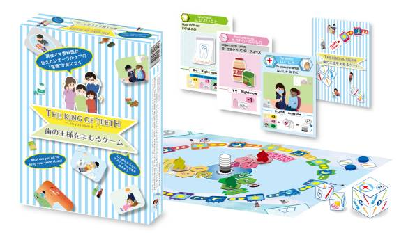

クリエイター部門: 選評
入賞作品に関する選評は次の通りです。
大賞（賞品：Amazonギフトカード5万円分、副賞：ゲームマーケット2023春「研修ゲームラボ」ブース内出展権）
「歯の王様をまもるゲーム」（株式会社Dental Defense 生澤右子さん、スピカデザイン 大下修央さん・東京都、埼玉県）

選評：子どもを持つ親が悩みがちなオーラルケアについて子ども自身が大人と一緒に体験できるようにゲーム化した点、専門家である歯科医の方が発案されておりエビデンスに基づいた内容である点、虫歯になってしまうプロセスを”カウントダウン"という形で表現しており視覚的な面白さも伴うゲームである点など、ユニークさ・学習要素・ゲーム性を兼ね備えており、大賞にふさわしい作品と評価されました。
審査員特別賞（賞品：Amazonギフトカード2万円分）
「ソノトキボクハ」（AvignonGamesさん・大阪府）
選評：同じものを見ても、まったく違うことを思う。他者との間でのミスコミュニケーションを解消するためのツールとして、「ソノトキボクハ」はシンプルながらにいろいろな遊び方が楽しめそうだと思った。例えば、自分自身が昔と今とで感じ方が異なっていることを伝えることもできる。あるいはこのゲームは7歳からとあるけれど、感情を言葉としてうまく伝えられないことで、もどかしくて泣いてしまう子供が、気持ちの整理をつけるためにも使えるのではないだろうか。そんないろんな使い方を思い起こさせるようなゲームである。ーー審査員 江間 有沙（東京大学未来ビジョン研究センター准教授）
「ツミキルン⁉︎」（渡邉かれんさん・佐賀県）
選評：陶芸をしたことがないのですが、リアルな焼き物をコマにしているところや、釜に詰めるところをテーマにしているところが斬新で面白い。ビジュアル的にもとても楽しそうで、やってみたくなりました。ーー審査員：加納 圭（滋賀大学教育学部教授）
「ペリー来航の7日間」（チーム家系さん・東京都）
選評：男性では「なんとなく」でしか分からない世界。まじまじと聞くのには恥ずかしさもあり、聞きづらいことをゲームを通じて追体験でき、上手く伝えられていると思う。その時女性ではどういったことが起こっているとか、人により症状が違うことや、アクシデントが起こった時の対応など、ゲーム後に女性やパートナーに対してのサポートの仕方を考える良い機会が持てるボードゲームである。高校生以上を対象としているが、対象はあえて男女で分けても良いと思った（女性は中学生以上、男性は高校生以上など）。より良い関係に気づいていく上で、ぜひ多くの男性に体験してほしいと思う。ーー審査員：堂野 能伸（NPO法人Board Game Japan代表理事）
入賞（賞品：Amazonギフトカード1万円分）
「LIFE」（フダコマ広場さん・東京都）
選評：防災という社会的に重要なテーマを扱い、老若男女が楽しめるゲームにしたことや、ゲームのコンセプトや仕組みを伝えるプレゼンテーション力の高さが評価されました。
「漢ポー」（石川家さん・山形県）
選評：お子さんが8歳の時にひらめいたアイデアをもとに家族でゲーム化されたということで、「ゲームの種になるアイデアは日々の生活の中に埋もれている」ことを感じさせるユニークな作品という点が評価されました。
「グラマ」（学生団体ビーラインドプロジェクトさん・東京都）
選評：視覚障害のある方とない方がともに遊び、相互理解を深めるためのゲームというインクルーシブな視点で開発されており、シンプルなルールですぐに遊べる協力ゲームであることが評価されました。
「ごみゼロゲーム」（坂野晶さん・兵庫県）
選評：環境問題をテーマにしたボードゲームは多くありますが、ごみ減量のキーワードとされる「4R」の中で”Refuse（リフューズ）”が最重要であるという明確なメッセージをゲームに反映している点が評価されました。
「ぎゅっと〜AIとともに生きる〜」（りんごラボさん・栃木県、埼玉県、神奈川県、東京都）
選評：AIと人間が共生する未来社会の姿をみんなで楽しみながら考える、というユニークなコンセプトを、近年国内で普及しつつある発想系カードゲームという形で具体化した点が評価されました。